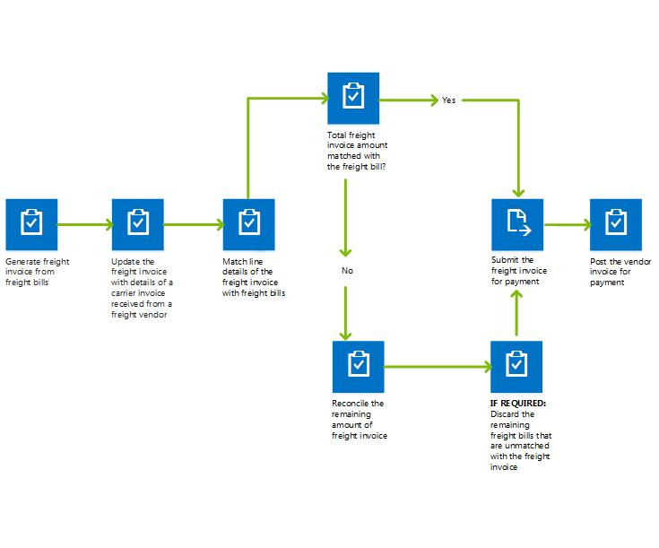

Fracht in der Transportverwaltung abstimmen
Important
Dynamics 365 for Finance and Operations hat sich zu speziell entwickelten Anwendungen entwickelt, mit denen Sie bestimmte Geschäftsfunktionen verwalten können. Weitere Informationen zu diesen Änderungen finden Sie im Dynamics 365-Lizenzierungshandbuch.
Dieser Artikel beschreibt den Frachtabstimmungsprozess.
Die Frachtabstimmung kann manuell oder automatischen durchgeführt werden. Um die automatische Frachtabstimmung zu verwenden, müssen Sie einen Überwachungsmaster einrichten. In ihm können Sie die Kriterien definieren, die festlegen, welche Fracht automatisch abgestimmt wird.
Der Frachtabstimmungsprozess
Frachtkosten werden vom den Tarifmodul berechnet, das dem relevanten Spediteur zugeordnet ist. Wenn ein Ladung bestätigt ist, wird ein Frachtbrief erstellt und die Frachtkosten werden an diesen übertragen. Die Frachtkosten werden je nach Konfiguration für den regulären Abrechnungsprozess als sonstige Zuschläge auf das entsprechende Quelldokument umgelegt (Bestellung, Auftrag und/oder Umlagerungsauftrag). Der Frachtabstimmungsprozesse (auch Abgleichsprozess genannt) kann starten sobald die Frachtrechnung vom Spediteur eingeht. Die Rechnung elektronisch oder auf Papier erhalten werden. Wenn die Rechnung auf Papier erhalten wird, können Sie mit dem Frachtbrief als Vorlage eine elektronische Rechnung generieren.
{kind=link}
Manuelle Abstimmung
Wenn Sie die Fracht manuell abstimmen, müssen Sie jede Rechnungsposition mit der Frachtbriefposition oder den-positionen für die zu fakturierende Ladung abgleichen. Diesen Abgleich führen Sie auf der Seite Frachtbrief- und Rechnungsabgleich durch. Wenn der Betrag der Rechnungsposition nicht mit dem Frachtbriefbetrag übereinstimmt, müssen Sie einen Abstimmungsgrund für die Abweichung auswählen. Sind mehrere Gründe für die Abstimmung zutreffen, können Sie die nicht abgeglichenen Mengen auf diese Gründe verteilen. Der Abstimmungsgrund bestimmt, wie die Differenzbeträge im Hauptbuch gebucht werden. Bei die Abstimmung des gesamten Rechnungsbetrags gebucht wird, wird dieser zur Genehmigung gesendet. Dann wird die Erfassung gebucht. Die folgende Abbildung zeigt, wie eine Frachtrechnung generiert und eine Frachtabstimmung ausgeführt wird. 
{kind=link}
Automatische Abstimmung
Um die automatische Abstimmung zu verwenden, müssen Sie den Zeitplan für die Abstimmung und die zu verwendenden Rechnungen und Spediteure angeben. Der Abgleich der Rechnungspositionen und Frachtbriefe wird entsprechend der Einrichtung des Überwachungsmasters und der Frachtbriefart ausgeführt. Nach dem Ausführen der automatischen Abstimmung müssen Sie alle Rechnungen bearbeiten, die das System nicht zuordnen kann. Sie müssen diese Rechnungen dann manuell verarbeiten, bevor Sie alle Rechnung für die Zahlung buchen können.